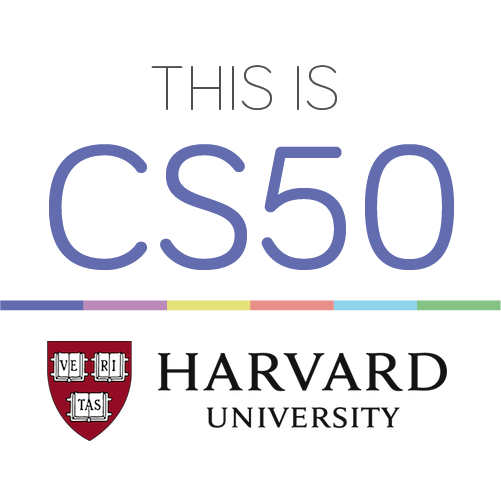
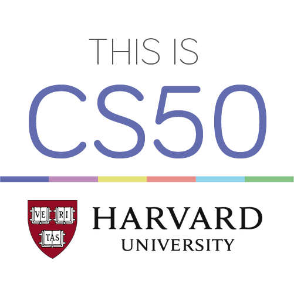

Graduações e cursos atuais
- Graduado na educação básica brasileira ('Ensino fundamental' e 'Ensino Médio').
- Graduado no First Test in English (FCE) da Cambridge International Examinations.
- Atualmente cursando Ciência da Computação na Universidade de Vila Velha (UVV.)
- Atualmente cursando o curso de Harvard CS50: Introdução à Ciência da Computação.
- Atualmente cursando o curso Cisco's Academy IT Essentials.
 
